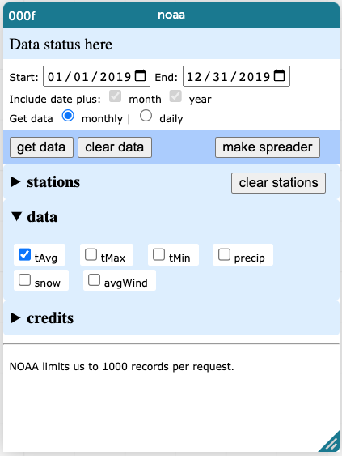

10 The NOAA Weather Portals
This chapter describes two data portals that students can use to explore historical weather data at various stations. The weather data include temperature and precipitation, either daily or monthly, for the last few decades. Of course there is more data than this out in the world: hourly data, humidity, air pressure, and more, for some stations going back for over a century. But these plugins try to manage the complexity of weather data to give beginners a great deal of interesting data without overwhelming them (and us).
These are similar to the BART data portal and the Census portals that are part of the lessons in this book. But they are different in that they get their data directly from NOAA, the National Oceanic and Atmospheric Administration, using a data feed they provide, rather than a dataset we have downloaded and massaged and posted expressly for this purpose. That means that, usually, weather from just a few days ago is in the dataset.
10.1 The little one (by Tim)
xxx replace this graphic with a newer one
This plugin will let you choose…
- from a small selection of diverse stations, with a leaning towards California (because it was created for a workshop in the LA area);
- whether the data are daily or monthly; and
- from among a small selection of data, e.g., precipitation or average temperature.
The software lets you choose dates back to roughly 1900.

Then there’s this thing about a “spreader.”
This is because we have been exploring a concept in data organization called “tidy data.” I will not go into it here; suffice to say:
- If you get only one type of data, you will not have a problem. Just put
valueon the vertical axis. - If you get two temperatures (e.g., tMin and tMax) do the same, and plop
whatinto the middle of the graph. - If you mix the data, like you get precipitation and temperature, your graphs will be unruly unless you use the spreader. Experiment, write me an email, or just use the bigger, more modern NOAA data portal!
10.2 The big one (by Concord)
When the nice people at Concord Consortium saw my NOAA Portal they realized they needed something like it for a project they were doing. So they took my code and expanded upon it.
You can also access this portal from any CODAP document by choosing NOAA Weather in the Plugins menu.
There are differences:
- Very cool: It has a map you can use to choose from among a zillion stations.
- You can only get one station at a time.
- If you want more than one measurement, they appear in different columns. This is usually what you want. Also, this means you do not have to worry about tidy datasets or spreading.
- The data go back, apparently, only to 1970.
- I have had trouble entering dates sometimes.